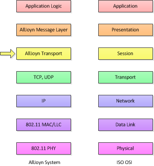
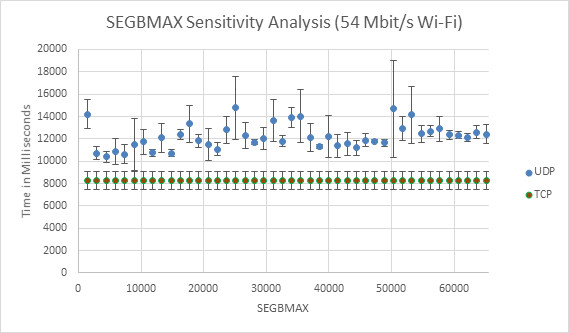
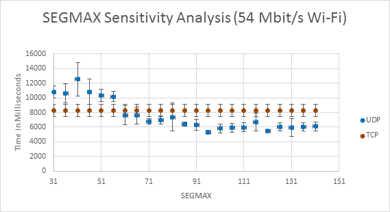

AllJoyn™ Transports Best Practices
Introduction
Transports are based on ISO OSI layer 4 - transport layer - mechanisms. Such transport mechanisms are typically optimized for some set of operating characteristics or network environments. The resulting optimizations and environments in the layer 4 transport mechanism will result in different qualities being presented by AllJoyn Transports that use them.
In order to be called an AllJoyn Transport, all Transports must provide the same capabilities, however, since the underlying mechanisms provide differencing amounts of support for various functions, some layer 4 transports, and therefore AllJoyn Transports will be more suitable to some distributed applications.
This document discusses how to determine which AllJoyn Transports might be more suitable than others to different application traffic patterns and requirements.
AllJoyn Transports
One of the fundamental abstractions in an AllJoyn system is that of a Transport. An AllJoyn Transport provides an abstract representation of a collection of underlying mechanisms that provides four basic functions :
- The ability to discover remote AllJoyn Bus Attachments or Interfaces
- The ability to advertise local AllJoyn Bus Attachments to the greater AllJoyn system
- The ability to establish traffic flows to other AllJoyn devices
- The ability to move AllJoyn Messages (representing Method Calls, Method Replies or Signals) between devices.
In the ISO OSI seven-layer model, the transport layer is responsible for moving data sequences from one host to another and maintaining appropriate transport-specific qualities of service. One measure of quality of service, for example, is reliable and ordered delivery of data. TCP and UDP both move data sequences from one host to another, and have different quality of service guarantees. TCP provides reliable, ordered byte streams; and UDP provides datagram services with no guarantee of ordering or reliable delivery. TCP and UDP are thus both transport layer (layer 4) protocols in the ISO OSI model.
AllJoyn Transports make use of lower-level OS services like TCP or UDP in order to manage the actual movement of data sequences, and therefore sit above layer 4 in the OSI protocol stack. Since the AllJoyn Transport manages underlying connections on behalf of the application layer (layer 7) the concept of AllJoyn Transport most closely matches the session layer (layer 5) of the ISO OSI model.
AllJoyn Messaging
The AllJoyn Message layer, which is responsible for marshaling and unmarshaling of Signals and Method Calls, can be thought of as residing in the presentation layer (layer 6) of the ISO OSI model; and the routing functionality of the AllJoyn Routing Node can be thought of as lying above AllJoyn Transports (still in layer 5), but below the Message layer at layer 6.
In the following figure, notice that the AllJoyn Bus Attachment corresponds to the application layer in the seven-layer model in that it provides the interface between the network stack and the application itself. Bus Attachments provide functionality required by the application to create, marshal and unmarshal AllJoyn Messages. This functionality corresponds to translating between application and network data formats and therefore corresponds to the presentation layer in the seven-layer model.

Figure: Mapping of AllJoyn system and OSI layer transports
AllJoyn Messages are sent to a local Routing Node which is responsible for selecting an AllJoyn Transport over which a given Message must be sent. AllJoyn Transports are responsible for controlling the dialogs between computers and therefore correspond to the session layer of the seven-layer model. Messages are sent to an OSI transport layer mechanism, for example TCP or UDP, with suitable guarantees of service. The transport layer passes byte streams or datagrams to the network layer and then down to the 802.11 MAC and PHY in the figure.
Supported AllJoyn transports
Since an AllJoyn Transport encapsulates the functions of moving data sequences, connections, and advertisement and discovery, there are separate AllJoyn Transports for separate underlying mechanisms. For example, the AllJoyn TCP Transport uses TCP/IP as the mechanism for moving data between Routing Nodes; the AllJoyn UDP Transport uses UDP/IP as the mechanism; the AllJoyn Bluetooth (BT) Transport does the same for Bluetooth connections, and the AllJoyn Local Transport uses UNIX domain sockets.
Often, the name given to an AllJoyn Transport echoes the method used in the underlying OSI layer 4 mechanism. For example, the AllJoyn TCP transport uses TCP/IP to move bits from one host to another; the AllJoyn UDP Transport uses UDP/IP to actually move bits.
AllJoyn applications may select the AllJoyn Transport that is actually used by choosing one or more TransportMask bits in appropriate AllJoyn APIs. The currently defined TransportMask bits are listed in the following table.
AllJoyn TransportMask definition
| Transport name | Value | Description |
|---|---|---|
| TRANSPORT_NONE | 0x0000 | No transport. |
| TRANSPORT_LOCAL | 0x0001 | The local transport. |
| TRANSPORT_BLUETOOTH | 0x0002 | Bluetooth transport. |
| TRANSPORT_WLAN | 0x0004 | Wireless local area network transport. |
| TRANSPORT_WWAN | 0x0008 | Wireless wide area network transport (not supported). |
| TRANSPORT_LAN | 0x0010 | Wired local area network transport. |
| TRANSPORT_ICE | 0x0020 | ICE (Interactive Connectivity Establishment) transport (not supported). |
| TRANSPORT_WFD | 0x0080 | Wi-Fi Direct transport (not supported). |
| TRANSPORT_ANY | 0xFFFF & ~TRANSPORT_WFD | Any transport except Wi-Fi Direct. |
Currently, the AllJoyn system's WLAN and LAN transports are supported by a single underlying TCP transport.
Routing node transport
Each transport establishes and maintains connectivity based on the underlying physical transport it supports. Based on the type of underlying physical transport, the actual connectivity between two routing nodes in an AllJoyn network can be either single-hop or multi-hop. An AllJoyn distributed bus is an overlay network whose topology does not necessarily map directly to the topology of the underlying network. If an application has no preference, it can provide TRANSPORT_ANY and allow the AllJoyn system to determine which transport to use.
The most commonly used Routing Node-to-Routing Node transports in the AllJoyn system are based on the IP family of transport mechanisms: TCP/IP and UDP/IP. These ISO layer 3 and 4 mechanisms are almost universally supported across the AllJoyn platforms of interest. Although from a high-level perspective, they accomplish the same objectives, at closer examination the go about things slightly differently and therefore have different strengths and weaknesses.
TCP
TCP and UDP are fairly complementary protocols, which is why they are both present in the IP stack. TCP is a relatively complicated connection-based protocol that allows applications to send data reliably from one side to another. If data is lost, it is retransmitted automatically by TCP. The transmitted data is stream-based which means that it is sent and received as a sequence of bytes that are arbitrarily (from the point of view of the sender) broken up into network packets. In order to operate over the wider Internet, streams of TCP data are flow-controlled and TCP uses congestion-avoidance mechanisms to prevent congestion collapse in the presence of (many) multiple streams.
UDP
UDP, on the other hand, is a simple, high-speed "wrapper" around the lower-level network layer (IP) functions provided to move data. UDP is inherently connectionless and data is sent in so-called datagrams which are discrete "packages". UDP is not a connection-based protocol; nor does it provide any reliability guarantees. There is no flow control nor is there congestion avoidance functionality present in UDP.
These low-level transport characteristics percolate up into the corresponding AllJoyn Transports which take advantage of those characteristics to more efficiently accomplish the goals of applications.
Since underlying layer 4 mechanisms can provide very different qualities of service, one should infer that the choice of AllJoyn TransportMask, and therefore Transport, can have significant effects on the quality of service of an AllJoyn Message flow. Making such choices effectively is the subject of the remainder of this document.
TransportMask
As shown in AllJoyn TransportMask definition, a number of TransportMask-related symbols are defined as of this writing. It is the case (for historical reasons) that although they are associated with different bits, the symbols TRANSPORT_TCP, TRANSPORT_WLAN, TRANSPORT_WWAN, TRANSPORT_LAN all refer to the AllJoyn TCP Transport. It is recommended that only the symbols TRANSPORT_TCP be used to refer to the AllJoyn TCP Transport in order to minimize confusion. TRANSPORT_NONE is simply a constant defined to be none of the transports, which isn't particularly useful. The Wi-Fi Direct Transport (TRANSPORT_WFD) is not currently supported. The implication is that only the following TransportMask definitions should be used to refer to specific AllJoyn Transports: TRANSPORT_TCP TRANSPORT_UDP
Recommendation 1
Do not refer specifically to transports that are present for historical reasons such as TRANSPORT_WLAN, TRANSPORT_WWAN, or TRANSPORT_LAN; neither refer to currently unsupported transports such as TRNSPORT_WFD. Instead, prefer currently defined transports -- TRANSPORT_TCP or TRANSPORT_UDP.
As mentioned above, symbols defining groups of transports are also provided:
- TRANSPORT_IP - Describes both TRANSPORT_TCP and TRANSPORT_UDP
- TRANSPORT_ANY - Refers to all currently defined transports that are not considered experimental.
- TRANSPORT_ALL - It is not recommended to use TRANSPORT_ALL unless there is a specific need to include all experimental AllJoyn Transports.
More typically, one would include specific experimental transports on an as-needed basis.
If there is no need to select an AllJoyn Transport in order to take advantage of some specific quality of service, one would pass TRANSPORT_ANY to all advertisement-, discovery- and session-related APIs. As a result, the AllJoyn Transport selected by an AllJoyn application is on a first-discovered basis. That is, the first advertisement that happens to be received is the one that will drive the selection of transport. Presumably this is fine since by selecting TRANSPORT_ANY both the advertising and discovering Bus Attachment are effectively declaring that "anything I discover is fine".
Recommendation 2
If the primary concern of a distributed application is the ability to connect, that is, when neither the client nor the service side of a communicating pair of Bus Attachments has any particular quality of service guarantee, prefer TRANSPORT_ANY and simply join a Session to the Bus Attachment corresponding to the first advertisement received.
Depending on the availability of AllJoyn Transport, this choice may result in the selection of a very high-speed IP-based Transport such as TCP or UDP. It may also result in a communication link over a personal area network connection which may be relatively slow. Since the overriding goal is communication irrespective of mechanism, such choices are presumed to be appropriate.
In order to make any more meaningful choices, one must understand some of the qualities of the existing AllJoyn Transports which might affect such a choice.
Homogeneous Multipoint Sessions
One of the connectivity options in the AllJoyn system is that of a multipoint Session. This option allows clients to send AllJoyn Messages to multiple destinations that are members of the Session. It may be desirable to ensure that all members of a multipoint Sesion be reachable over the same kind of transport. This is referred to as a homogeneous multipoint Session.
It is also the case that as of this writing (release 14.12) there is a defect in the AllJoyn Routing Node code that causes problems with heterogeneous multipoint sessions (mutipoint sessions with members reached through different Transports). If the system happens to preferentially select different advertisements on different hosts, using TRANSPORT_ANY could cause connectivity problems.
Because of these situations, one should specify a single transport type for multipoint sessions.
Recommendation 3
Consider making a single explicit choice of transport when using multipoint sessions to avoid different qualities of service among session members and to work around a code defect in release 14.12 of the Routing Node.
AllJoyn TCP Transport
The AllJoyn system provides a Transport based on the TCP/IP protocol. TCP/IP is the workhorse of the current Internet, has a long history, and works well over a very large range of links of it rates and signal qualities.
TCP, defined by RFC-793, has been used extensively in many disparate environments. From this, one can infer that since TCP/IP is almost always a good choice for communicating over the greater Internet, so the TCP Transport is almost always a good choice for AllJoyn Transport mechanism.
It is worthwhile to understand, however, that while there are a number of things that TCP is very good at, there are also some things that TCP does not do well.
Advantages to using TCP
TCP/IP provides a connection-oriented, error-checked, ordered, reliably delivered stream of bytes between communication endpoints. This kind of stream is often called a flow, and corresponds to the transmission mechanism underlying the concept of a Session in the AllJoyn system.
The AllJoyn system converts Messages (Method Calls, Replies, Signals, etc.) into a collection of bytes and passes them to TCP. In turn, TCP takes the bytes that make up sequences of Messages and breaks them up into whatever TCP considers to be the best-sided "chunks" of data to send. TCP calls these chunks "segments" and it is these segments that are sent to the IP layer. Note that there is no necessary correlation between the delimitation of TCP segments and AllJoyn Messages. These chunks are delivered to the remote side of a connection, reorganized into a stream of bytes and delivered to the AllJoyn system. It is the stream of bytes that is delivered between AllJoyn instances and there are no record markers inserted automatically by TCP - TCP provides a byte stream service.
The upshot of this is that TCP is very good at moving streams of bytes from one place to another over internetworks of possibly dramatically differing and somewhat typically asymmetric link speeds. TCP is typically configured by default with quite large buffers allowing for high bandwidth-delay products over the current Internet; but also provides flow control to prevent a fast writer from overrunning a slow reader. Basically, TCP is designed to be very good at transferring large amounts of data; and it accomplishes this goal very well. If the traffic pattern presented by a distributed application presents as a sequence of very large AllJoyn Messages it appears to the underlying system as a byte stream to be transferred.
Recommendation 4
If the primary concern of a distributed application is the ability to transfer large amounts of data reliably, prefer the AllJoyn TCP Transport, and selectively join Sessions only to Bus Attachments advertising over TRANSPORT_TCP.
Disadvantages to using TCP (reasons to use UDP)
In order to accommodate the wildly varying qualities of service of the worldwide Internet, TCP is also quite aggressive about trying to get data sent from one end to another. This means that it will retry transmissions for quite a long time before giving up. This can translate into a significant delay (13 minutes, in many cases) before a Bus Attachment is notified of a link failure. Link failure can happen frequently in mobile environments as devices move from one access point to another, for example.
TCP does provide a keep-alive mechanism designed to mitigate this problem, but support is platform-specific and spotty. The AllJoyn system provides a layer 5 mechanism called LinikTimeout to implement a device independent link failure detection mechanism.
Recommendation 5
If using the TCP Transport, consider using the LinkTimeout feature to quickly detect link failures; or consider the UDP Transport.
The counterpoint to the observation about TCP trying very hard to get data from one side of a connection to another is exactly that. TCP tries many times over a long period of time to get data to the remote host . Thus, if the application requires such intensive retry and can tolerate long delays before links are declared down, TCP will be much more aggressive in trying to get data across a link.
Recommendation 6
If the primary concern of a distributed application is the ability to move data reliably, prefer the AllJoyn TCP Transport and do not set a LinkTimeout.
To avoid congestion collapse of the greater internetwork, TCP implements significant congestion control mechanisms are used in TCP. These include slow-start, which begins transfers slowly in order to avoid filling the internet "pipe" with data which might be dropped due to congestion. Because slow-start will delay use of full-bandwidth capabilities of the network, intermittent or infrequent traffic patterns in which a device is idle for a time, then sends a burst of data, and then goes idle again may run afoul of slow-start. Since the AllJoyn UDP Transport is designed to run only on local subnetworks, it does not implement slow-start.
Recommendation 7
If the traffic pattern of the distributed application consists of bursts of significant amounts of data between fairly extended periods of idling, consider using the UDP Transport to avoid effects of TCP slow-start.
There have been several additions to TCP to accommodate call-and-response traffic patterns, such as delayed ACK and the Nagle algorithm. Nonetheless, TCP is oriented toward transferring large amounts of data. TCP is not very good at sending a small amount of data and receiving a small amount of data in return - exactly the kind of interactions typical of Remote Procedure Call; and the AllJoyn system is, at its heart, an RPC system.
Recommendation 8
If the traffic pattern of the distributed application consists of Remote Procedure Calls, especially with call and reply Messages of length less than 1480 bytes, consider using the UDP Transport which is optimized for this kind of interaction.
Since TCP is a reliable byte stream protocol, its whole reason for being is to transfer all bytes from one end to another. This is not always desirable. In a real-time system, it is often the case that out-of-date data is worthless. Such out-of-date data simply consumes network and host resources unnecessarily. Since TCP simply transfers streams of bytes reliably, there is no opportunity to drop worthless data once it has been delivered to the system. The UDP Transport has been optimized to allow AllJoyn Messages to be timestamped and will drop the UDP datagrams that make up an AllJoyn Message at any time the datagrams are found to be out of date.
Recommendation 9
If the traffic pattern of the distributed application includes messages with a finite Time to Live (TTL), consider using the UDP Transport which provides significantly improved support for avoiding unnecessary transmission of Messages with expired TTL.
TCP provides a three-way handshake consisting of SYN, SYN+ACK, and ACK segments. This TCP-specific messaging must complete before any user data may be transferred. Since the AllJoyn system is derived from D-Bus, and D-Bus requires a SASL authentication phase, The AllJoyn system must implement a SASL exchange for D-Bus compatibility on TCP. The AllJoyn system also requires its own handshake consisting of the exchange of a BusHello Message and a HelloReply Reply message. Thus, connection establishment using TCP requires the following: At least three packets be exchanged for TCP connection establishment Four packets for the SASL exchange and ACKs * Four packets for BusHello, reply and ACK.
Additionally, TCP requires a four-way handshake for connection termination.
The UDP Transport uses much simplified signaling and, since it is an AllJoyn-specific protocol, piggybacks AllJoyn session establishment messages on top of the ARDP SYN and SYN+ACK exchanges. Connection termination is handled in the UDP Transport at the session layer, so only one or two packets are required for connection termination - four or five packets of overhead, as compared to eleven. At a round-trip delay of six milliseconds, this can be a significant improvement.
Recommendation 10
If the traffic pattern of the distributed application includes frequent connection establishment and termination, consider using the UDP Transport which requires significantly fewer packets to establish and terminate connections.
AllJoyn UDP Transport
Overview
The AllJoyn system provides a Transport based on the UDP/IP protocol. UDP is a very simple, datagram-oriented (packet-based) layer 4 protocol. Each output operation by an application will produce one datagram which, modulo fragmentation, is sent to the remote destination which receives it as one input operation.
Unlike TCP, UDP provides no guarantees of ordering or delivery. Since AllJoyn Message streams do provide such guarantees, a reliability layer must be provided to use UDP in the AllJoyn system. The reliability and ordering guarantees are provided by the AllJoyn Reliable Datagram Protocol (ARDP). Additionally, ARDP provides the fragmentation mechanism required to send maximal AllJoyn Messages (about 130 Kbytes) over UDP which has a maximum datagram size of 64 Kbytes.
NOTE: For more information about UDP, review RFC 768: User Datagram Protocol and RFC 908: Reliable Data Protocol.
Advantages to using UDP
The goal of the UDP Transport is to address the areas of weakness that the TCP Transport presents when executing call and response traffic patterns. The UDP Transport does not do any kind of congestion control since it is expected to operate only on directly connected subnetworks. It therefore does not do slow-start and lost packets are not considered an indication of congestion, which is not necessarily an appropriate inference in wireless networks.
Recommendation 11
If the environment in which applications are expected to be deployed corresponds to communication over wireless physical layers and communication is expected to be only on the directly connected subnetwork, consider the UDP Transport.
Since the UDP Transport is a packet-oriented transport, it is possible to map AllJoyn Messages directly into packets. This allows for selectively dropping the constituent packets of a packet stream according to expired TTL. Since this selective dropping of AllJoyn Messages cannot be done in TCP, when the offered load of a network exceeds its capabilities, the TCP Transport tends to "back up" with the in-flight segments, all consisting of data which will be ultimately dropped. In extreme cases, the network can be completely congested with data that will be discarded, the end result being no interesting (on-time) data is transferred.
Recommendation 12
If applications use the Time to Live (TTL) option in Messages, consider the UDP Transport which provides a much improved ability to drop non-interesting (not on-time) data.
Since UDP Datagrams are not associated with specific sockets in the BSD Sockets API, it is possible for a single socket to support multiple ARDP connections. This corresponds to the ability of multiple AllJoyn Sessions to run over a single socket. It also turns out that File Descriptors must be allocated in an AllJoyn Routing Node to handle events related to a Session and communication endpoint management. Since both sockets, and more generally file descriptors, are operating system resources which may be limited, specifying the UDP Transport can allow many more connections on a given host system.
Recommendation 13
If socket or file descriptor resource usage is anticipated to be a problem, consider specifying the UDP Transport which uses fewer resources per connection than the TCP Transport.
Tuning the TCP Transport
Each system that provides a networking subsystem and TCP/IP protocol suite usually presents a number of tunable parameters for those subsystems. In Linux systems, these parameters are typically accessed through the sysctl interface; in Windows, there will be a number of corresponding Registry entries. Operating system providers will initialize these various parameters with values that provide good tradeoffs for the systems and environments involved.
There is a wealth of information regarding tuning these network and TCP parameters available on the Internet. We therefore will not duplicate that information here. When tuning for the AllJoyn system, remember that sequences of AllJoyn Messages are converted into byte streams and ultimately sent to TCP/IP by the AllJoyn TCP Transport. It is the linearized AllJoyn message stream that is the traffic pattern to be optimized for.
It is a testament to TCP and the selection of these various tuning parameters that the vast majority of system users will not attempt to change the underlying TCP configuration. In most cases, the system is left as-shipped and it will work sufficiently well.
Wireshark can provide valuable insights into the TCP messaging that occurs in AllJoyn systems. The AllJoyn system has provided a dissector to the Wireshark project which is now included in the standard Wireshark distributions.
Tuning the UDP Transport
Each system that provides a networking subsystem and TCP/IP
protocol suite usually presents a number of tunable parameters.
In Linux systems, these parameters are typically accessed
through the sysctl interface; and in Windows there will be a
number of corresponding Registry entries. Operating System
providers will initialize these various parameters with values
that provide good tradeoffs for the systems and environments involved.
There is a wealth of information regarding tuning these network and UDP parameters available on the Internet. We therefore will not duplicate that information here. When tuning for the AllJoyn system, remember that sequences of AllJoyn Messages are converted into UDP Datagrams by the AllJoyn UDP Transport. It is the sequence of AllJoyn messages sent as datagrams that forms the traffic pattern to be optimized for.
Socket buffers
Since the vast majority of Internet traffic is sent over TCP, tuning the UDP protocol has become somewhat of a second-order problem. The socket buffers provided by default for UDP are often quite small, on the order of 128 Kbytes. While this is sufficient for many uses of UDP such as name services, it is small when compared to the bandwidth-delay product of modern Wi-Fi systems.
NOTE: An 802.11n system using Modulation and Coding Scheme (MCS) 11 can run at 300 megabits per second. Given a round-trip time of 6 msec, this corresponds to a buffer size of 225 Kbytes.
One thing to keep in mind when considering buffer sizes for the UDP Transport is that one socket may be shared by a number of Sessions. The UDP Transport actually provides additional buffering on a per-connection basis in order to accommodate at least one maximally sized AllJoyn Message (about 130 Kbytes)
Wireshark can provide valuable insights into the UDP messaging that occurs in AllJoyn systems. The AllJoyn system has provided a dissector to the Wireshark project which is now included in the standard Wireshark distributions.
ARDP configuration
Along with the UDP subsystem, the UDP Transport provides the ARDP reliability layer (detailed in Overview. There are a number of configurable parameters corresponding to ARDP, but two of those configuration items are of utmost importance: SEGBMAX and SEGMAX. The SEGBMAX parameter sets the limit on how large of a UDP Datagram that ARDP will use when fragmenting AllJoyn Messages. The SEGMAX parameter sets the number of datagrams that can be in-transit at any time.
SEGBMAX can be thought of as corresponding loosely to the Maximum Segment Size (MSS) of TCP and SEGMAX can be thought of as corresponding to the receive window size.
Typically, the primary use case of the UDP Transport will be to transfer relatively small RPC Messages and the corresponding Message Reply. The SEGMAX and SEGBMAX parameters are irrelevant if transferring messages and replies of less than 1480 bytes since all data fits into one packet. However when transferring larger amounts of data, it is possible to optimize ARDP in ways that can make it significantly faster than TCP.
Tuning scenario
While the level of tuning described below will be rarely needed, the scenario is provided for completeness and as an illustration of how the UDP Transport works.
NOTE: This analysis was done using the default network and UDP protocol settings of the Linux system on which the experiments were run.
SEGBMAX setting
The following figure shows a sensitivity analysis for the setting of SEGBMAX. The time measured on the y-axis is the time to transfer a 10 megabyte file in maximal (130 Kbytes) AllJoyn Messages.

Figure: SEGBMAX sensitivity analysis
Since UDP is a user-level protocol, all acknowledgments must be done at user privilege , which implies a context switch for each packet. If SEGMAX is chosen to be too small, or if large amounts of data are sent in very small datagrams, much time is spent simply context switching to ACK data - the system thrashes. As SEGMAX approaches one packet (1480 byte payload) and moves upward toward the maximum UDP Datagram size, the system spends less and less time having to ACK individual smaller datagrams. This tendency is counteracted, however, by the fact that as UDP datagram size increases, the number of actual PHY packets that must be resent in the presence of a datagram loss also increases. These pressures tend to cancel each other out in practice. In the data below, there is a local minimum at SEGBMAX of 4400 bytes which represents the optimal choice for the 54 Mbit per second Wi-Fi.
In the test runs shown in the SEGBMAX sensitivity analysis, the combination of SEGBMAX and SEGMAX was held constant at the minimal value required to accommodate a maximal AllJoyn Message.
SEGMAX setting
The following figure shows a sensitivity analysis for SEGMAX with SEGBMAX held constant at 4440 bytes.

Figure: SEGMAX sensitivity analysis
The plot starts with SEGMAX at 31 and plots the time to transfer a 10 megabyte file for each SEGMAX value. It can be seen that there is an underlying step function that jumps at SEGMAX values of 31, 62, and 93. These correspond to the values at which one, two and three maximal AllJoyn Messages can be buffered in the system. There is a significant gain to double-buffering AllJoyn Messages at SEGMAX of 62 and greater; and there is an incremental gain to triple-buffering AllJoyn Messages at SEGMAX of 93.
Notice that the UDP Transport is slower than the TCP Transort with single-buffering, slightly faster with double-buffering and significantly (15-20%) faster with triple buffering. Since there is no statistically significant improvement past triple-buffering, a good choice of SEGBMAX and SEGMAX can be shown to be SEGBMAX = 4440 bytes, and SEGMAX = 93 datagrams. This is in fact the choice made as the default for the ARDP configuration.
It is possible that different systems could have specific characteristics that change this analysis. For example, if the UDP Transport is run on a host device for which context switch time is much higher and the network much cleaner, the tradeoff of context switch time versus network retransmission may be at a different point. It is possible that different networking environments may require more datagram buffering to fill the in-transit data; or it may also be the case that triple-buffering is overkill on much slower networks.
Conclusion
As they are configured by default, both the UDP Transport and the TCP Transport provide a level of service as defined by the abstract notion of an AllJoyn Transport. Although they both provide the same services, the characteristics of the underlying transport mechanisms on which they are based percolate up.
Characteristics of underlying transports may be viewed as either advantages or disadvantages depending on the applications using them and the requirements of those applications. Specific traffic patterns generated by distributed applications may imply that the choice of one of the AllJoyn Transports can provide significantly better levels of service than others.
It may also be the case that no specific choice of AllJoyn Transport is actually the best choice. In such situations, the fact that a connection, any connection, is possible overrides the qualities of service possible from underlying transport mechanisms.
In any case, understanding the underlying traffic of a distributed application and how AllJoyn Transports handle that traffic allows for optimizing the distributed application behavior.